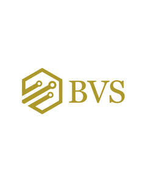
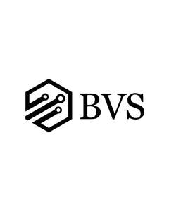

Trade Mark Journal No.2025/021 23 May 2025
UK00004198223 2 May 2025 (35,36)
Mark 1

Mark 2

- Class 35
- Accounting; Book-keeping and accounting; Book-keeping and accounting services; Management accounting; Computerised accounting; Administrative accounting; Accounting, in particular book-keeping; Consultancy relating to tax accounting; Accounting services; Accounting consultancy relating to taxation; Computerised accounting (Preparation of -); Bookkeeping; Accounting services relating to tax planning; Business advice relating to accounting; Book-keeping; Accountancy; Business accounting advisory services; Tax consultancy [accountancy]; Taxation [accountancy] consultancy; Accounting advisory services; Tax planning [accountancy]; Tax advice [accountancy]; Taxation [accountancy] advice; Accountancy advice relating to tax preparation; Accountancy advice relating to the preparation of tax returns; Payroll preparation; Tax return advisory [accountancy] services; Tax preparation; Income tax returns (Preparation of -); Preparation of tax returns; Tax consultations [accountancy]; Tax return preparation; Preparation and completion of income tax returns; Preparation of tax declarations; Advice on tax preparation; Advisory services relating to tax preparation; Accountancy advice relating to taxation; Payroll assistance; Payroll advisory services; Business advisory services; Business consultancy and advisory services; Business advisory and consultancy services; Advisory services for business management; Business management advisory services; Management (Advisory services for business -); Business research and advisory services; Business management consultancy and advisory services; Consultancy and advisory services for business management; Advisory services relating to business management and business operations; Advisory services (Business -) relating to the management of businesses; Advisory services relating to business organization; Advisory services and information in business organization and management; Advisory services relating to business management; Advisory services relating to business planning; Advisory services relating to business administration; Business advisory services relating to company performance; Advisory services relating to business risk management; Business advice.
- Class 36
- Income tax advice; Financial advice relating to tax; Financial advice relating to taxation; Financial planning services relating to taxation; Preparation of pension payments; Pension fund administration; Pension fund investment management; Pension investment management; Pension fund services; Financial advisory services.
BVS Accounting Ltd